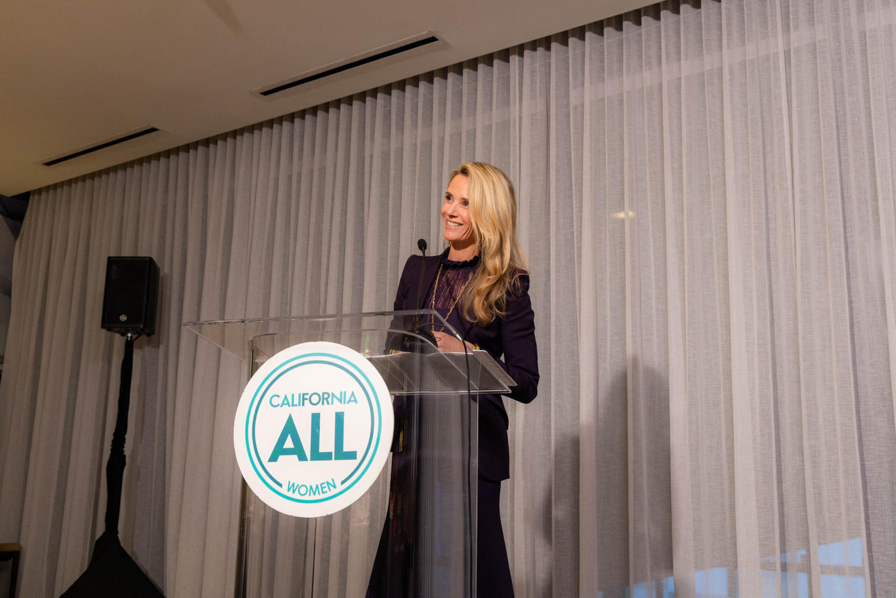

Wildfire Fund
$21B
AB 1054 fund, half from ratepayers, built after the Camp Fire and PG&E bankruptcy.
Utility politics
$962k
Reported utility money into Newsom campaigns and causes across his statewide years.
Family nonprofit
$3.7M+
Salary plus Girls Club contracts from The Representation Project over a decade of IRS filings.
How to read this page
This is an opinion from the High Tower District. It is not a court verdict. Where the public record is hard, the numbers stay hard. Where the claim is about motive (dopamine, self-deception, a gravy train he has learned to enjoy), that is inference. Inference can still be tested. That is what proof is for.
The opinion, said plain
The position here is simple. Gavin Newsom is hooked on the hit that comes when money, praise, and power arrive at the same time. Kickbacks in the legal sense are hard to prove in a courtroom. Kickbacks in the street sense are easier to see: you protect the people who keep the checks moving, you call it public safety, and you feel righteous while you do it.
He can believe that story. That is the point. Believe, not "be leave." A man can live inside his own pitch. Lawyers draft the language. Consultants tune the lighting. Donors write the checks. The governor walks out and says he is holding a dangerous utility to account. Ratepayers still carry the fire.
If that opinion is only heat, it dies under a proof. If it survives a proof, it is no longer just a vibe. Keep that distinction. It is the whole method.
What the record actually shows
Two days after Newsom won the governorship in 2018, PG&E equipment ignited the Camp Fire. The company later pleaded guilty to 84 counts of involuntary manslaughter. Weeks after inauguration it was in bankruptcy. Months later Newsom signed AB 1054, the law that built a $21 billion wildfire fund paid by shareholders and ratepayers so utilities that collect a state safety certificate can shift catastrophic fire costs off the company books.
ABC10 documented that Newsom's office hired O'Melveny & Myers on a multimillion-dollar contract, and that those lawyers drafted AB 1054 before the bill was introduced. Guggenheim billed millions more. CPUC staff were pulled into the drafting. After the law was signed, "drafting of legislation" was written back into the contract. That is not a meme. That is procurement and email.
PG&E and the other investor-owned utilities kept giving. Washington Post tallied more than $700,000 from PG&E, its foundation, and employees into Newsom's political life and his wife's film work across two decades. Consumer Watchdog's 2026 compilation put utility money into Newsom campaigns and causes at $962,500 across his statewide years, and put combined IOU political spending during his administration in the hundreds of millions. Newsom's answer has been consistent: no governor has done more to hold PG&E accountable. That sentence can be true as a press line and still miss the bill.
In 2025 and 2026 the same fight came back. SB 254 was called "effectively a bailout" in the Los Angeles Times. In the last weeks of his last legislative session he pushed another liability shield. Survivors called it a closed-door deal. Insurers said premiums would rise. The utilities wanted it. The governor said the fund would run dry and the state had to move.
None of that is a signed confession that he is "addicted to dopamine." It is the pattern the opinion is built on. Safety talk. Ratepayer risk. Repeat.
The Tower already paid part of this bill
This page is not the first time the District wrote the meter. The Quiet Overcharge documented CARE failures: low-income customers billed at full rate while the company said the system had a problem. Retroactive credits arrived after persistence or a camera. That is not a wildfire fund. It is the same company and the same habit of making the household eat the error.
From 21 Screens to Bed Fort was smaller and closer. One retired engineer in a 12-by-12 room cut a wall of screens because the kilowatt-hour price stopped being theoretical. Fifty cents is not a vibe. It is a reason to change how you live.
The civic stack around it is the same District. The August 19 Planning Commission minute is the local version of "call it homelessness, skip the statute." The roads suit is what happens when a funding clock and a signed bill collide. Tower Confluence is the street, the org chart, and the statewide rhyme. Homeless Rates by State is the map that refuses the slogan. Different files. Same demand: stop narrating safety while the cost slides downhill.
Why so many people still like the pitch
Look at the man the way a room looks at him. A lot of women find him attractive. That is not an insult and it is not a theory of government. It is a fact of television. He photographs like a candidate who already won the lighting. Charm is a political asset. Charm is also a solvent. It dissolves the question of who pays.
The Tower District already holds a compatible culture for the other half of his brand. Gay, lesbian, bisexual, transgender neighbors live here, work here, and have every right to like a governor who talks warmly about the issues that sit on their list. That liking is human. It is also the trap.
If you resonate with just one Newsom policy (housing language, climate language, transgender language, the sentence that makes your people feel seen) you can still be feeding the gravy train that keeps the rest of the machine liquid. The train does not need you to love PG&E. It needs you to treat one hot button as a moral hall pass for everything else. That is how a district that cares about safety, rent, and a light bill still ends up defending a man whose lawyers wrote a utility shield.
You can hold a decent position on one issue and still be used. That is not a smear of the issue. It is a warning about single-issue capture. The people closer to the grift (the counsel on the contract, the donors at the foundation dinner, the consultants who keep the dopamine loop tight) do not need you to see the whole ledger. They need you to stay loyal to the part you already like.

The wife ledger and the diaper program
Start with what IRS forms actually say, not with the biggest number on a Facebook card. The Representation Project, founded by Jennifer Siebel Newsom, has paid her more than $1.9 million in compensation since 2011. Her for-profit shop, Girls Club Entertainment, has taken about $2.2 million in contracts from the same nonprofit. Combined reporting on salary plus company payments often lands near $3.7 million over the decade. Recent filings put her own salary around $150,000 to $161,250 for a claimed 40-hour week, with a matching contract to Girls Club in many years.
The Sacramento Bee found more than $800,000 in donations to that nonprofit from companies that had business in front of the governor, including PG&E, AT&T, and Kaiser. She takes no salary from the California Partners Project. That second nonprofit has received about $5.1 million in behested payments, donations solicited in the governor's name. Behested payments are legal. Legal is not the same thing as clean-looking.
Then the diapers. In 2025 and 2026 the administration built Golden State Start, a taxpayer-funded, California-branded free-diaper program. Baby2Baby won a $6.2 million contract. One of its co-CEOs sits on the board of Siebel Newsom's California Partners Project. State staff warned the design (400 diapers at discharge, newborn and size 1 only, no exchange) could waste product. The contract was logged as non-competitively bid after budget language carved an exemption. CBS California Investigates spent 66 days getting the records. The office called early reporting "demonstrably false," then posted 356 pages after the story ran. The records, as released, do not prove a crime. They do prove a family-adjacent vendor, a bidding carve-out, a waste warning ignored, and a public-benefit claim that is thinner than the press event.
Online cards that put Baby2Baby co-CEOs at $240,000 were wrong. Public 990s put those two salaries under $80,000. Do not inflate what you do not need. The dubious part is not a fake CEO paycheck. The dubious part is the social return compared with the political return. A branded bundle at the hospital door photographs well. Whether it outperforms ordinary diaper banks is the question the administration was slow to answer with paper.
Couple tax returns released in 2026 showed $11 million in earnings since he became governor, most of it from wineries, restaurants, and investments, not from the First Partner salary line. The opinion is not "they are poor without the state." The opinion is that the state-adjacent money still matters because it is the part that depends on him remaining the man who can move a bill, a contract, and a donor call.
The reading problem he advertises
Newsom has spent twenty years telling the dyslexia story. He says he can read two chapters and remember nothing unless he underlines. He says a thirty-minute speech can take thirty hours. He says teleprompters are horrible. He says he did not feel smart until 35. That is his testimony, not an insult invented on Olive Avenue.
A learning disability is not a moral crime. Using the story as a brand while living inside a machine of lawyers, briefers, and fundraisers is a vulnerability. The High Tower opinion is that this is the kind of man a sophisticated shop can steer. Not because he is stupid. Because the hit of being rescued, briefed, and applauded is itself a drug.
The analogy from the street is ugly on purpose. A pimp does not need a victim who loves the pimp. He needs a victim who needs the next dose, and who will call the dose care. Swap the dose for redirected public money, legal retainers, foundation dinners, and the feeling of being the adult in the room. The lawyers do not have to hate him. They have to keep him believing that the next shield, the next fund, the next "safety certificate" is the thing that keeps California from burning. He can believe it. The ratepayer still pays.
Proof is a method, not a mood
Some people cannot run a proof. That is not a slur. It is a skill gap. Other people can. The skill has a name and a classroom. At Texas A&M the logic course many of us met first was Philosophy 240, or the number your catalog used that year. The lectures are not a secret society. Logic courses, textbooks, and worked examples are online. Anyone with a phone and a stubborn streak can start.
If you learn one tool, learn RAA. Reductio ad absurdum. Assume the claim. Derive what must follow. If the consequence is impossible or contradicts the record, the claim falls. That is not a vibe. That is a machine for catching a story that cannot carry its own weight.
Work it here. Assume: "Newsom's utility policy is only public-safety protection." Then the Camp Fire guilty plea, the ratepayer half of the wildfire fund, the O'Melveny draft, the safety certificates, the later continuation bills, and the donor line into the family nonprofit should look like side noise. They do not look like side noise. The assumption starts to break. That is not a courtroom knockout. It is the honest first move. Run it again on the diaper contract. Run it again on "I am not influenced by that." Keep running it until the sentence either stands or drops.
This can happen to anybody
The same slide lives at fallacy.ahightower.com. The High Tower Fallacy Codex is not a Newsom museum. It is a set of 23 patterns that show up in a Capitol hallway and in a kitchen argument. Special pleading. Motivated reasoning. The halo that turns one good sentence into a full indulgence. The straw man that lets you fight a cartoon instead of a bill.
You do not need to be a governor to lie to yourself. You need a reason to stay comfortable. Money is a reason. Applause is a reason. Being the attractive one in the photo is a reason. Being the person whose people finally heard their issue named is a reason. That is why the page exists. The fallacies are portable. They will follow you home.
Second Timothy, and the part that is on you
This know also, that in the last days perilous times shall come. For men shall be lovers of themselves, lovers of money, boasters, proud, blasphemers, disobedient to parents, unthankful, unholy, Without natural affection, trucebreakers, false accusers, incontinent, fierce, despisers of those that are good, Traitors, heady, highminded, lovers of pleasures more than lovers of God; Having a form of godliness, but denying the power thereof: from such turn away.
2 Timothy 3:1-5, King James
The lesson is not "Gavin is the Antichrist." The lesson is hypocrites in general. A form of godliness with the power missing. Safety language with the cost shoved onto the meter. Equity language with a family-adjacent contract. Charm with no self-audit.
You cannot outsource that audit. If you cannot be objective, make a plan, and do a critical self-assessment, the rest will not happen. Not for him. Not for you. Control yourself first. Put down the criminal violence. Put down the gang codes. Put down the greenlight garbage. Put down the habit of pushing people around because the room let you. Kindness to the general public is not a slogan you post after a rally. It is what is left when you stop feeding on other people's lack of options.
Honesty with yourself is the hardest work in the stack. Harder than a campaign ad. Harder than a fallacy quiz. Harder than admitting you liked one policy and let it cover a bill you never read. Learn RAA. Open the Codex. Read the CARE story and the bed-fort math and the August 19 minute. Then look at the man you find attractive, or the man who talks your language, and ask the only adult question left:
If he is protecting the public, why does the public keep paying for the protection?
Sources
- ABC10 FIRE-POWER-MONEY investigations: Newsom office contract with O'Melveny & Myers; AB 1054 drafting; PG&E donations during felony probation; Camp Fire manslaughter plea.
- Washington Post (Nov. 11, 2019): PG&E money into Newsom campaigns and Siebel Newsom film work.
- Consumer Watchdog, "The Disinformation Echo Chamber" (Aug. 2026): utility political spending and Newsom totals.
- Los Angeles Times / AP / Politico / CalMatters 2025-2026: SB 254, wildfire-fund continuation, end-of-session liability proposals.
- Los Angeles Times (June 25, 2026) and Sacramento Bee: Representation Project compensation, Girls Club contracts, behested payments to California Partners Project, corporate donors including PG&E.
- CBS News California Investigates (May-July 2026): Golden State Start / Baby2Baby diaper contract, bidding exemption, waste warnings, 990 corrections on CEO pay.
- Los Angeles Times and Yale Center for Dyslexia profiles: Newsom on reading, teleprompters, and the thirty-hour speech.
- High Tower District: The Quiet Overcharge, Bed Fort, pc-aug19, roads-suit, tower-conflu, ht-rates, Fallacy Codex.